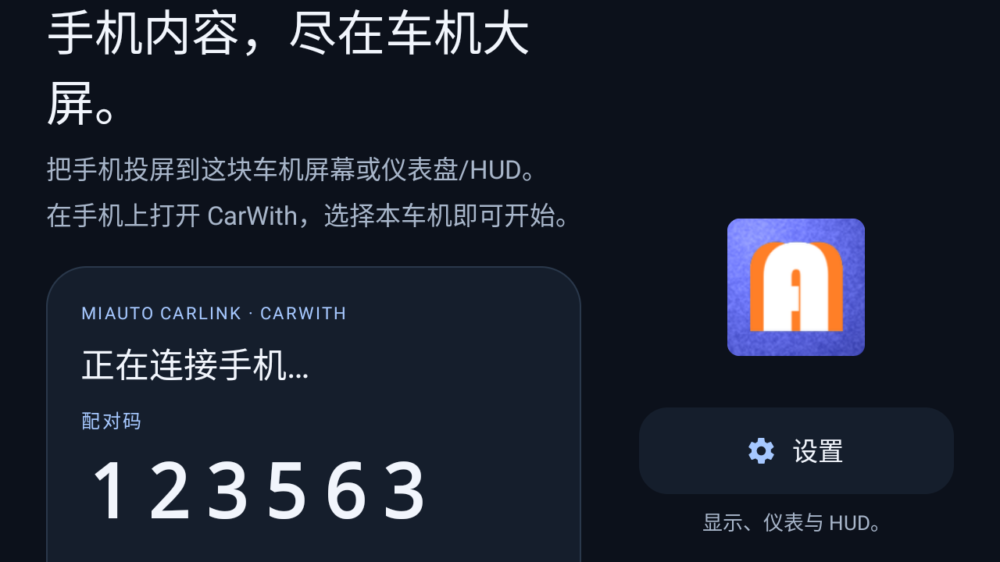
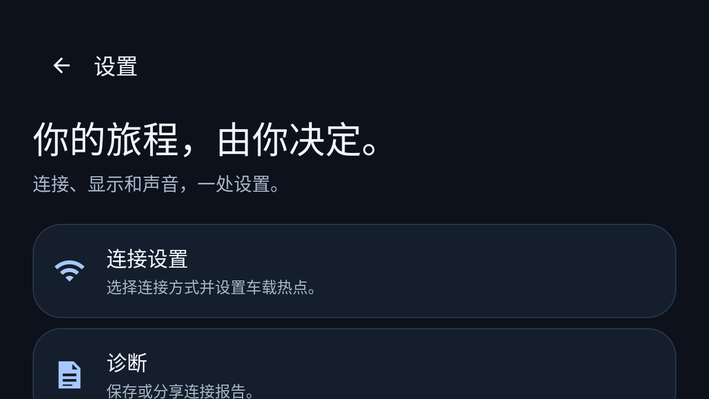
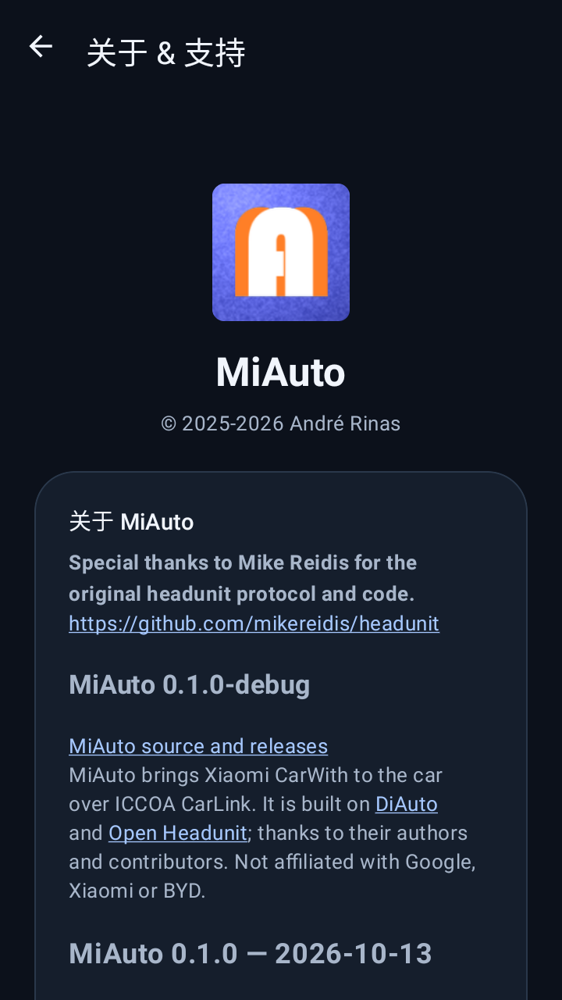

小米 / OPPO / vivo 等 ICCOA CarLink 手机，
直接上车机大屏。
手机上的导航、音乐与电话，落到这块车机屏幕上。Car++ 装在车机上，手机上的 CarWith、Car+ 车联或 Jovi InCar 照常用，两者在空中自己配对。
车机上不需要配套应用，不需要转接盒等外接硬件，不需要 root。
把 Car++ 装到车机上，然后在手机上打开 CarWith、Car+ 车联或 Jovi InCar，在附近设备列表里选中本车机即可。配对全自动，6 位配对码会显示在车机屏幕上。
范围说明：本项目面向车机上的 ICCOA CarLink 手机端 —— 小米 CarWith、OPPO Car+ 车联、vivo Jovi InCar 等。其他投屏协议的反馈同样欢迎，但不提供支持。
这个项目实际做了什么
Car++ 是 ICCOA CarLink 的车机端接收器 —— 小米 CarWith、OPPO Car+ 车联、vivo Jovi InCar 走的都是这一套协议。它以既有的 Android Auto 车机端工程为基座，把手机侧协议换成这一套 —— 于是原本就稳的部分得以沿用，而真正需要实测的，是换掉的那一块。
让车机接住手机互联
应用把自己广播成一台任何 ICCOA CarLink 手机都可以投到的车机。手机继续用它自己的地图、音乐与电话应用；手机侧不装任何东西，车机侧除了这个 APK 也不需要额外配置。
- 车机广播，手机在附近设备列表里发现它。
- 6 位配对码显示在车机上，在手机上确认。
- 不需要账号、不需要转接盒、不需要数据线。
会自己回来的配对弹窗
最要命的一种失败是：用户在手机上把配对弹窗关掉了。车机仍在广播，但手机不会自己再把弹窗弹出来。Car++ 在未连接时每 30 秒重新广播一次，从而让弹窗自己回来，且不需要重启任何东西。
- 重播是「停-启」而不是重复调用：对一条已在广播中的链路重复广播会被忽略。
- 看门狗绝不打断进行中的会话。
- 首页另提供手动刷新按钮，做即时重试。
仪表盘与 HUD 链路
基座面向比亚迪已向第三方应用开放的仪表区域，以及挡风玻璃导航输出。只要车机开放了这些区域，Car++ 就保留了这两条链路。
- 仪表投屏按车机按需开启，默认关闭。
- 若车机未向应用开放仪表区域，设置项会报告「功能不可用」，而不是报错。
- 这两条链路是继承来的，尚未与 Car++ 的协议栈一起验证 —— 见状态表。
状态一览
| 能力 | 状态 | 说明 |
|---|---|---|
| 空中建立 ICCOA CarLink 会话 | 真机已验证 | Newland NLS-MT9055-GL / Android 11 / arm64 |
| 配对码显示与重播 | 真机已验证 | 冷启动后仍有效；30 秒看门狗已确认 |
| 比亚迪仪表盘镜像 | 已实现，未验证 | 继承自基座；手上没有比亚迪车机 |
| 比亚迪挡风玻璃 HUD 导航 | 已实现，未验证 | 数据链路已接好；输出未在真车上跑过 |
「已实现，未验证」的意思是：这条代码路径已经写好并能编译，但还没有在它面向的硬件上运行过。我们把它如实列出来，而不是写成「可用」。
为车机而做






装到车机上
- 下载 APK，通过你的车机允许的方式安装。若系统提示，请允许「安装未知来源应用」。
- 打开一次 Car++。首页会显示车机名称与一个 6 位配对码。
- 在手机上打开 CarWith、Car+ 车联或 Jovi InCar（或设置里的投屏入口），在附近设备列表里选中本车机。
- 在手机上点确认配对，手机画面即出现在车机上。请在停车状态下操作。
若手机找不到车机，请保持手机蓝牙与 WiFi 开启、两块屏幕都亮着，然后重试。车机在未连接状态下每 30 秒重新广播一次，因此手机上被关掉的配对弹窗会自己回来。
完整安装文档 ↗更新内容
- 0.1.1 —— 文案更新。 ICCOA CarLink 是小米、OPPO、vivo 联合发起的标准。首页、「关于」「支持」页面与法务声明改为并列书写「小米 CarWith / OPPO Car+ 车联 / vivo Jovi InCar」，不再只提小米；并补上繁体中文首页文案。行为与 0.1.0 一致。
- 无线接收 ICCOA CarLink 手机端（小米 CarWith / OPPO Car+ 车联 / vivo Jovi InCar 等）—— 手机放在兜里或无线充电板上即可。
- 配对码自动出现，并带 30 秒重播看门狗：手机上误关的配对弹窗会自己回来，无需重启应用。
- 完整继承基座的设置体系 —— 连接、显示、视频、输入、音频、备份、重置与诊断。
- 继承仪表盘与 HUD 输出链路，供开放了这些区域的车机使用；详见下方的真实状态。
- 车机友好的首页：大号配对码、刷新按钮、一个入口进设置。
- 独立包名与独立签名密钥，可与同车机上的其他接收端应用并存。
兼容性
已验证： 在 Newland NLS-MT9055-GL（Android 11 / arm64）上，应用可安装、可启动、可广播、可显示配对码并完成一次 CarWith 会话，且配对码在冷启动后依然有效。尚未验证： 在比亚迪或其他量产车机上的安装与配对，以及仪表盘 / HUD 投屏链路 —— 这些继承自基座，尚未与 Car++ 的协议栈一起在真实车机上跑过。若你正好在用这类设备，请把自己当作早期测试者，并把现象反馈给我们。
获取版本更新
新版本会发布在仓库的 Releases 页，同时提供 APK 与校验值。
升级与签名
Car++ 有自己的包名与自己的签名密钥，与它所基于的项目相互独立。本仓库构建的版本由这把密钥签名，彼此之间可以覆盖升级；但无法与另一把密钥签名的版本互相覆盖。